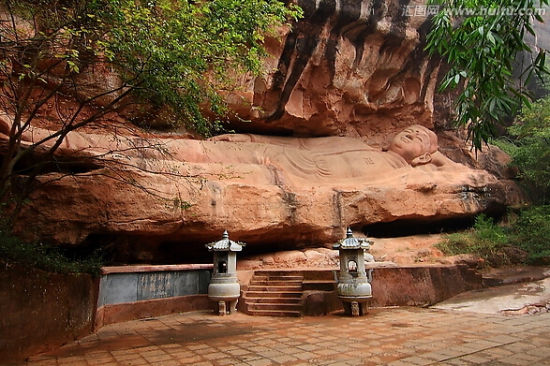

| 首页| 红色故都| 江南宋城| 生态明珠| 客家摇篮| 世界橙乡 |
赣州是我国当今保存最完好的北宋城，尤其是宋代文物最多的一座滨水城市，走进赣州古城如置身“宋城博物馆”，故有“江南宋城”之誉。这里有“江南第一石窟”——通天岩，有全国唯一的宋代铭文砖城墙，有沿用了近900年历史、由100条木舟用铁索连环而成的古代水上交通要道——古浮桥，有中国唯一到至今仍在使用的古代下水道系统——古福寿沟，有中国八景文化的发祥地八境台、南宋词人辛弃疾留下千古绝唱《菩萨蛮·书江西造口壁》的郁孤台等。
通天岩岗峦起伏，巍岩峥嵘，山不高而陡峭，地不大而奥奇；林木藩茂，洞壑幽深，既有神灵之窟宅，又多悬崖梵宫之兴造。自古以来，它就是一处集自然景观和人文景观于一体的游览胜地。通天岩这里岩深谷邃，树木参天，丹崖绝壁，风景秀丽，因为“石峰环列如屏，巅有一窍通天而得名”通天岩。通天岩地处丘陵，最高处为群玉阁所在的山脊，高度为192.96米。沿着这条蜿蜒曲折 的山脊，自东向西延伸着三个山凹。在这三个山凹中，分别有忘归岩、观心岩、龙虎岩、翠微岩和通天岩等五个景点，构成通天岩石窟景区。 众多的摩崖龛象和摩崖题刻，就镌刻在这岩洞的悬崖峭壁之间。通天岩石窟现有摩崖龛象410尊，摩崖题刻128品，数量之多，艺术水平之高，在江南尚属罕见。1988年，被国务院列为第三批全国重点文物保护单位。通天岩是我国南方古代石窟艺术宝库，这里有江西最大的石龛造像群，共有石龛279座，石刻造像359尊。石刻造像均为佛像神祇，多属唐宋时期作品。这些造像神态各异，精致俊美，是古石雕艺术的瑰宝。通天岩附近岩深谷秀，泉水涓涓，古木参天，冬暖夏凉，是游览和避暑的好地方。
福寿沟是一处地下水利工程。它位于江西赣州，修建于北宋时期，工程由数度出任都水丞的水利专家刘彝主持，是罕见的成熟、精密的古代城市排水系统。它根据街道布局和地形特点，采取分区排水的原则，建成了两个排水干道系统，因为两条沟的走向形似篆体的“福”“寿”二字，故名“福寿沟”。虽经历了900多年的风雨，至今仍完好畅通，并继续作为赣州居民日常排放污水的主要通道。近年来，随着几次暴雨导致城市内涝的消息传出，人们将目光频频投向古城赣州，以及隐藏在古城地下的古老城市排水系统——福寿沟。明明地处江南，低洼多雨，更兼有两条江水穿城而过，赣州城却因为一套福寿沟，保住了老城区千年不涝。
郁孤台建在赣州市区北部的贺兰山顶，始建于唐代，因树木葱郁，山势孤独而得名。李渤、苏东坡、辛弃疾、岳飞、文天祥、王阳明、郭沫若等历代名人都曾在这里留下过诗词。其中，与郁孤台渊源最深的，要数南宋著名词人辛弃疾，他在赣州任职时，留下名词《菩萨蛮·书江西造口壁》，郁孤台从此名扬天下。郁孤台一楼正厅置江泽民同志亲书《菩萨蛮》。郁孤台是赣州老城区的制高点，台上建有3层高的仿木结构楼阁，为省级重点风景名胜区。登上郁孤台，可远眺秀丽的山光水色和赣州全景。郁孤台的始建年代已经无法考证了，唐代时虔州刺史李勉曾登台北望，将台更名为“望阙”。宋绍兴十七年赣州知州曾慥增创二台：南边叫“郁孤台”，北边叫做“望阙台”，后几经兴废，仍名郁孤台。1983年按清代同治年式样重建。台有3层，高17米，占地面积300平方米。游人登上郁孤台，可远眺市区全景。